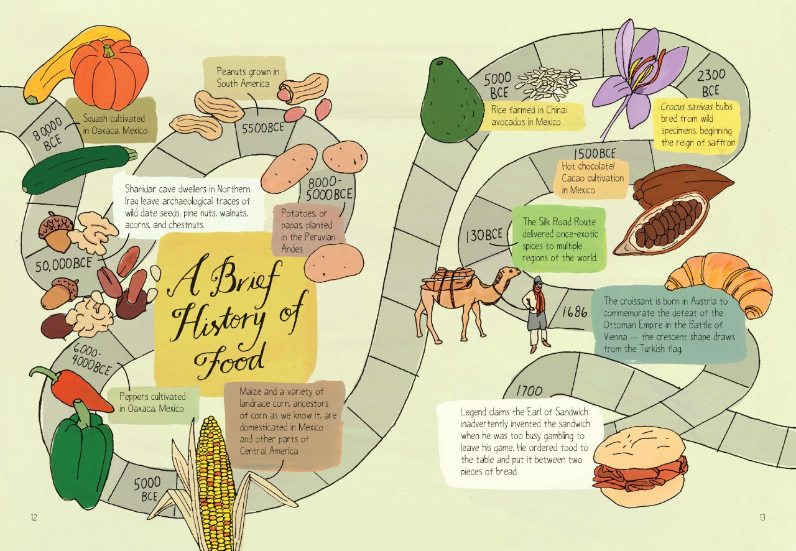
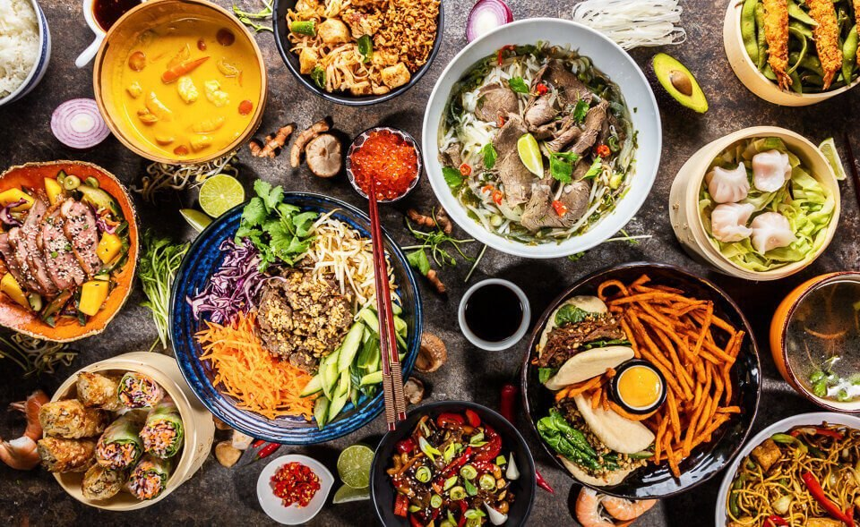
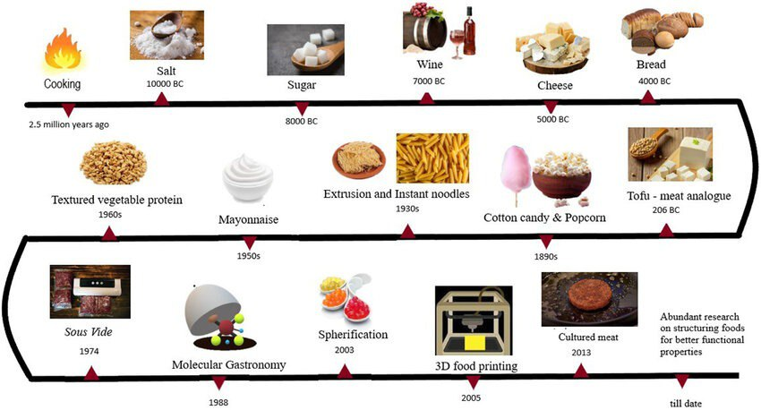

The Cultural and Historical Significance of Food
Food is much more than sustenance – it is a powerful cultural symbol and plays a central role in shaping traditions, customs, and identities.
The History of Food
From the days of hunters and gatherers to the agricultural revolution, food has been pivotal in human development. It became a currency, a symbol of wealth, and a means of power in ancient civilizations.
Food and Culture
Across the globe, food reflects cultural values and traditions. For example, in Italy, food symbolizes family; in Japan, food preparation is an art; in Mexico, bold spices highlight a vibrant culture.
The Evolution of Food
In the modern world, food has evolved beyond nutrition. It is now a focus for social interactions, economic transactions, and environmental discussions.
Global Food Movements
- Farm-to-table: Supporting local farmers and reducing environmental impact.
- Plant-based diets: Emphasizing health and sustainability.
- Sustainable systems: Focusing on eco-friendly and equitable methods.